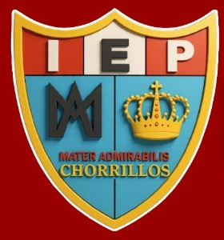
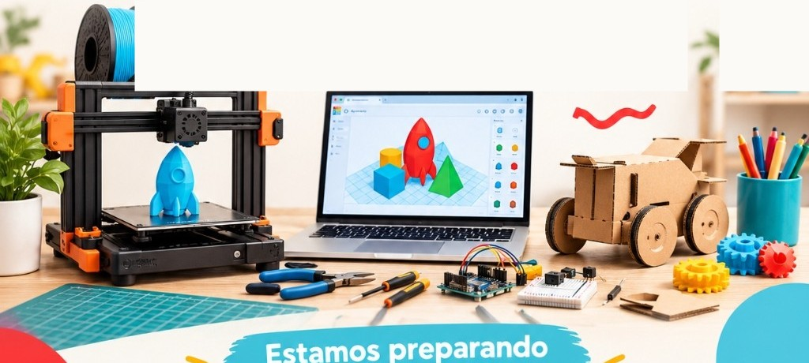
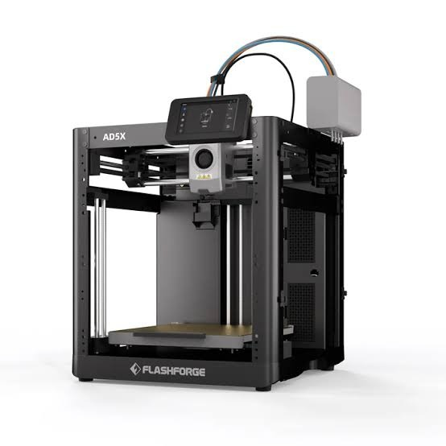
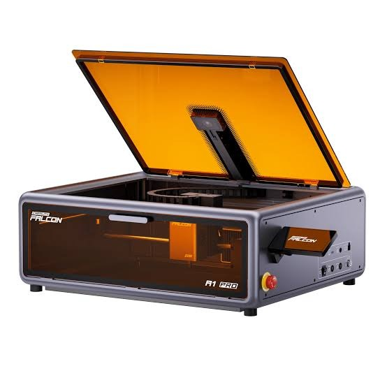
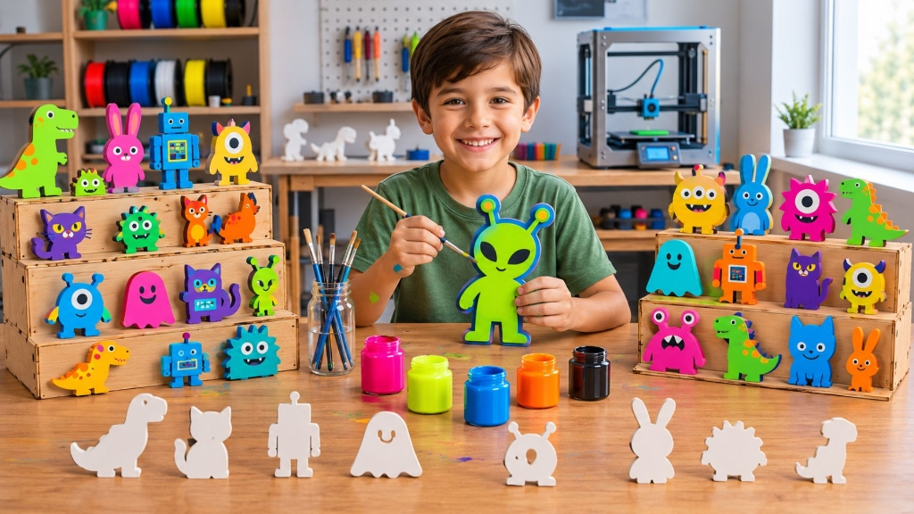
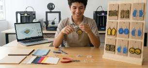

Colegio Mater Admirabilis
Colegio Mater AdmirabilisUna propuesta donde el colegio no invierte en maquinaria ni asume riesgos operativos: tinkiLab traslada sus impresoras 3D multicolor, cortadora láser, materiales y docentes especializados para activar talleres de alto valor para estudiantes de primaria y familias de Chorrillos.

Diseño digital en pantalla, prototipado rápido, electrónica interactiva y fabricación física de proyectos reales que los alumnos se llevan a casa.
El colegio facilita su sala de cómputo y la difusión; nosotros resolvemos el 100% del equipamiento, insumos y la experiencia pedagógica.

Sistema multicarrete capaz de imprimir piezas en varios colores simultáneos sin pausas manuales. Usa filamento PLA vegetal biodegradable (a base de almidón de maíz, atóxico y seguro).

Gabinete cerrado con tapa naranja de protección visual certificada. Permite cortar y grabar con exactitud milimétrica tableros de madera y acrílicos en espacios ventilados del colegio.
Bobinas de filamentos PLA de múltiples colores, maderas para corte láser, pinturas acrílicas, pinceles, herramientas de ensamble y cajas de empaque coleccionable.
Mentor principal especializado en pedagogía infantil STEAM. Si el grupo supera los 12 alumnos, incorporamos un cotutor asistente para acompañar a cada niño en su pantalla.
Videotutoriales paso a paso, plantillas 3D descargables y seguimiento de misiones para que los estudiantes sigan creando desde su casa durante la semana.
Coordinamos la clase demostrativa gratuita previa (Open Day), la feria de clausura familiar (Demo Day) y entregamos certificados oficiales con el logo del colegio.
Un proceso fluido de aprendizaje que acompaña al estudiante en cada etapa, desde la primera chispa de una idea hasta ver su producto terminado.
Boceto y proporciones en papel
Definición de la idea, dibujo a mano con medidas reales, proporciones y narrativa del proyecto.
Curvas digitales y siluetas en pantalla
Digitalización del trazo, vectorización de nodos y criterios de solidez geométrica (trazo continuo y base estable).
Relieves y cuerpo sólido tridimensional
Modelado en Tinkercad: extrusiones, relieves por capas, tolerancias mecánicas de encaje y base de soporte.
Impresión 3D multicolor y manufactura
Laminado en Slicer (densidad, capas) y fabricación física con filamento PLA ecológico o ensamble de piezas láser.
Pinturas acrílicas, color y post-procesado
Retiro de soportes, pulido y aplicación de técnicas de pintura acrílica, contrastes de color y barniz protector.
Packaging, marca y Demo Day final
Diseño de empaque coleccionable, tarjeta de autor y presentación pública en la feria de clausura frente a las familias.
El colegio puede elegir un taller insignia para concentrar su convocatoria o activar turnos simultáneos (ej. Primaria Menor en la mañana y Primaria Mayor o Docentes en la tarde).

Primaria Menor • 7 a 9 añosDiseña personajes en relieve, fabrícalos capa por capa con impresión 3D multicolor, píntalos y crea una colección lista para el mercado.
Diseña tus propios accesorios y letreros, córtalos con precisión láser combinando maderas y acrílicos, y define su packaging de exhibición.

Docentes & familias del colegioAprende a trasladar iconografía cultural e identidad escolar a productos físicos tangibles mediante modelado digital y prototipado rápido para educación.
Acciones concretas para completar los cupos sin desgaste administrativo para el colegio.
Antes de iniciar el verano, realizamos una sesión demostrativa gratuita de 45 minutos en el colegio durante las jornadas de matrícula. Llevamos la impresora 3D multicolor funcionando en vivo frente a los padres y niños. Al ver nacer una pieza real frente a sus ojos, las familias se matriculan con total confianza.
En la sesión 12, invitamos a los padres a la exposición de las colecciones de sus hijos. Cada alumno presenta su producto y recibe su certificado. Los padres comparten fotos en redes sociales etiquetando al colegio, generando publicidad orgánica y prestigio para Mater Admirabilis.
12 sesiones prácticas de 90 minutos con máquinas, insumos y plataforma incluidos.
Compara el Paquete Llave en Mano (tarifa plana tinkiLab, máximo excedente para el colegio) con la Alianza 50 / 50 (ganancia compartida a partes iguales).
Podemos visitar la sala de cómputo del colegio, definir los días ideales de dictado y entregarte el diseño de flyer listo para compartir con las familias.